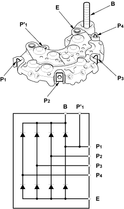
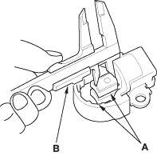
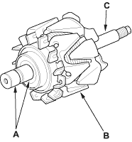

Rectifier Test
- Check for continuity in each direction, between the B terminal and P terminals, and between the E terminal and P terminals of each diode pair.
All diodes should have continuity in only one direction. Because the rectifier diodes are designed to allow current to pass in one direction, and the rectifier is made up of eight diodes (four pairs), you must test each diode in both directions for continuity with an ohmmeter that has diode checking capability: a total of 16 checks.
- If any diode is faulty, replace the rectifier assembly. (Diodes are not available separately.)
- If all the diodes are OK, go to step 17.

Alternator Brush Inspection
- Measure the length of both brushes (A) with a vernier calliper (B).
- If either brush is shorter than the service limit, replace the brush assembly.
- If brush length is OK, go to step 18.
Alternator Brush Length:
Standard (New): 10.5 mm (0.41 in.)
Service Limit: 1.5 mm (0.06 in.)

Rotor Slip Ring test
- Check that there is continuity between the slip rings (A).
- If there is continuity, go to step 19.
- If there is no continuity, replace the alternator.

- Check that there is no continuity between each slip ring and the rotor (B) and the rotor shaft (C).
- If there is no continuity, go to step 20.
- If there is continuity, replace the alternator.